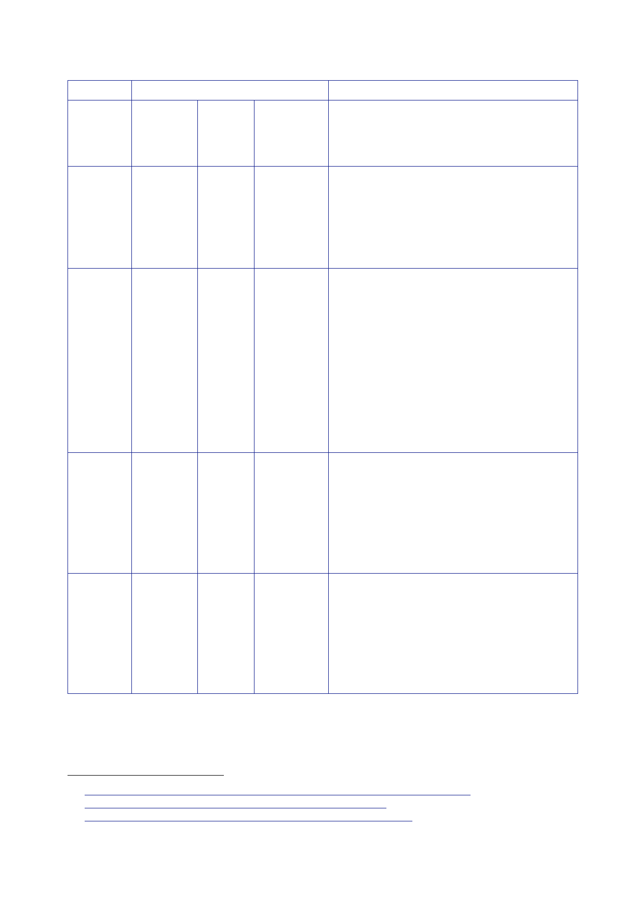

12.1 |
Security Sector Reform
Period
February
2005
May
2005
November
2005
(although
data
from
18 Oct)
December
2005
Estimated
total
Notes
Iraq Iraq
and Including
Jordan
known
ArmorGroup
posts
144
There were
86 officers training the IPS but it is
not clear
where they were based. In addition
there
were:
6 officers
mentoring senior police officers.
12 officers
working on specialist capabilities.
40 IPAs
ArmorGroup
105 More
than Comprising:
187
CPA‑I DCC
and staff officer
11 officers
in Baghdad (UK funded)
8 officers
in Basra with 10 ArmorGroup officers in
support.
70+
ArmorGroup in provinces
21 in
az‑Zubayr plus 2 ArmorGroup officers
58 in
Jordan
The Inquiry
has added 5 officers to reflect
training
posts in Baghdad that appeared
consistent
around that time.
Comprising:
CPA‑I DCC
and staff officer
13 officers
in Baghdad (+4 ArmorGroup)
5 at
Baghdad Training Academy
11 officers
in Basra (+5 ArmorGroup and 1
military)
16 officers
at Shaibah
Comprising:
CPA‑I DCC
and staff officer
10 officers
in Baghdad (+13 ArmorGroup)
5 at
Baghdad Training Academy
11 officers
in Basra (+5 ArmorGroup and 1
military)
7 officers
at Shaibah plus a civilian
1416
Note FCO,
21 February 2005, ‘Iraq – UK Support to Civil Policing in Iraq –
2005’.
1417
Report
Smith, 15 May 2005, ‘Next Steps on Policing – Review’.
1418
Paper
Smith, 20 November 2005, ‘Next Steps on Policing –
Review’.
1419
Minute
Smith, 25 December 2005, ‘Weekly Report’.
411